Sampling issues
Temporal trends
Exposure groups
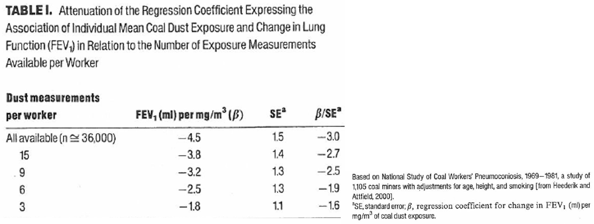
Loomis, Kromhout, 2004
Several different sampling strategies
Haphazard/convenience
Worst case
Representative
Random
How exposures were collected may determine what we can infer from them
Also need to consider temporal trends
Question: what are the strengths and weaknesses of each of these approaches?
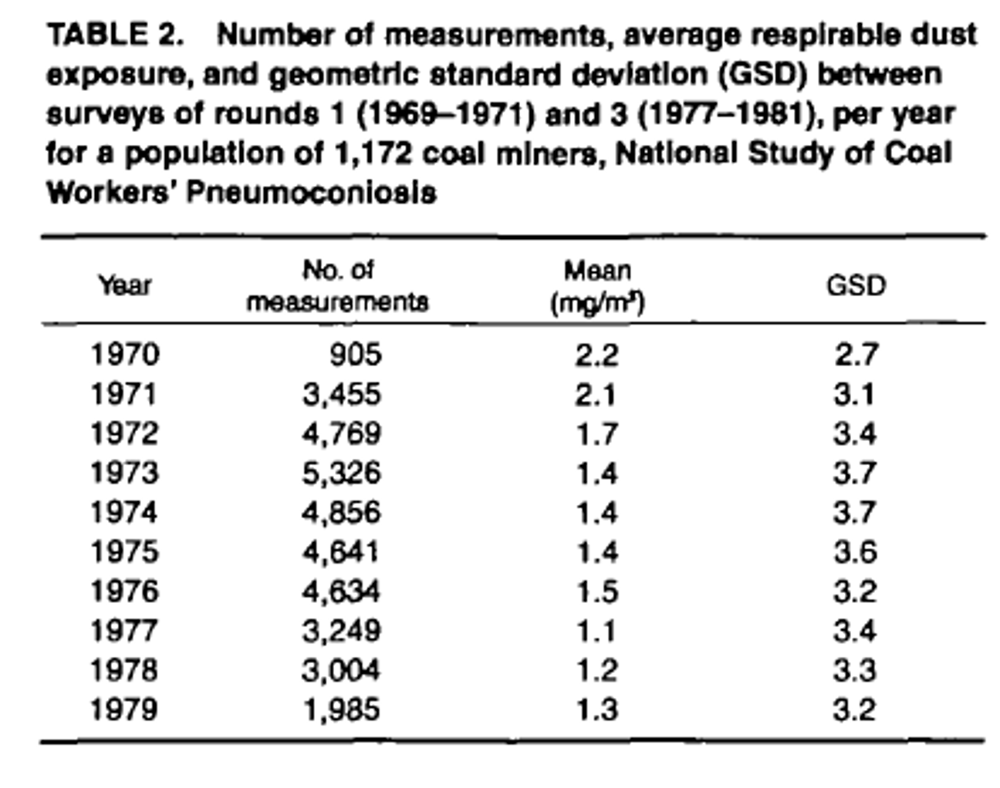
Heederik, Attfield, 2000
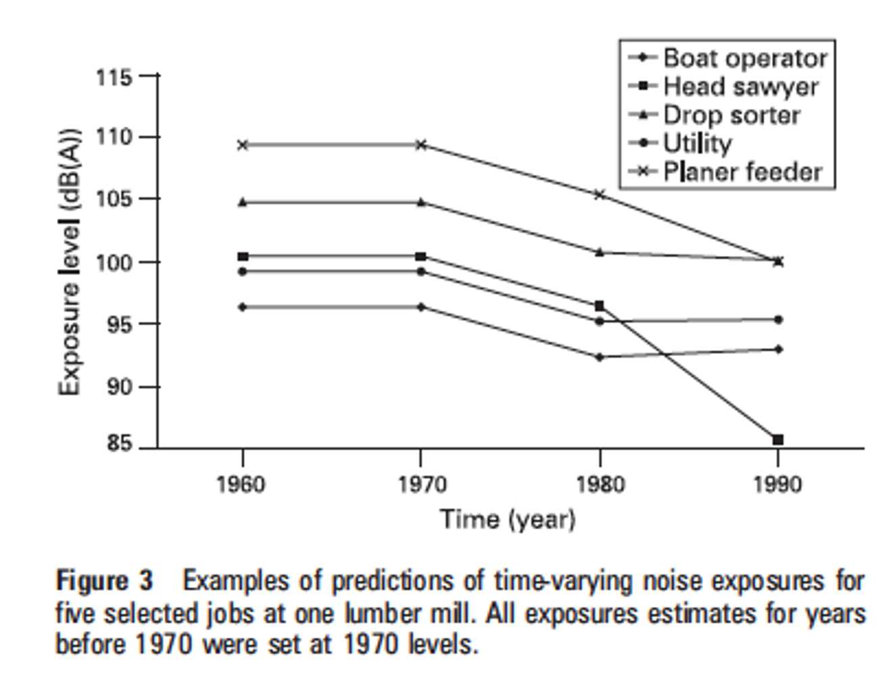
Davies, Teschke, Kennedy, Hodgson, Demers, 2008
Exposure varies greatly over time and space
Measure individuals’ exposures
Use repeated measurements on individual to calculate individual average (only their data)
Often considered gold standard approach
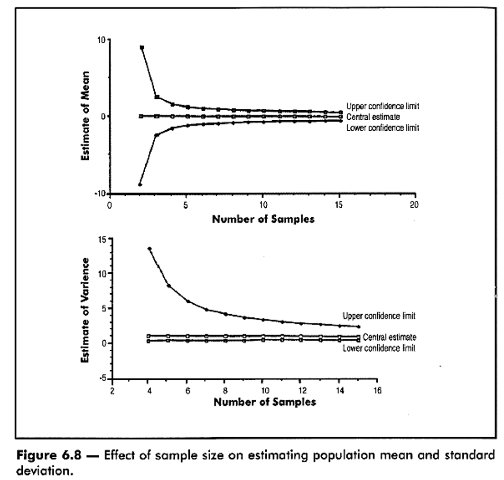
Ignacio and Bullock, AIHA, 2006
If individual-level approach is gold standard, come up with at least two reasons we might want to create exposure groups?
Even with repeated measurements, measured average level is at best approximation of true exposure
Higher within-person variability and/or smaller inter-person variability = more attenuation of exposure-response relationship
Logistical/financial challenges
Lack of direct access to individuals
To address scarce individual data, we commonly pool data across individuals
Increased amount of data in groups reduces random variability associated with estimate
Apply group estimates to individuals who likely have similar exposures
Create subgroups based on common features of exposure
Ideally, all workers within each group measured
Must consider between-group, within-group, within-individual variability
Tielemans, Kupper, Kromhout, Heederik, Houba, 1998
Often more effective than individual-level assessment
Logistically less demanding than individual approach
Should result in almost unbiased estimated coefficients of exposure-response relationship
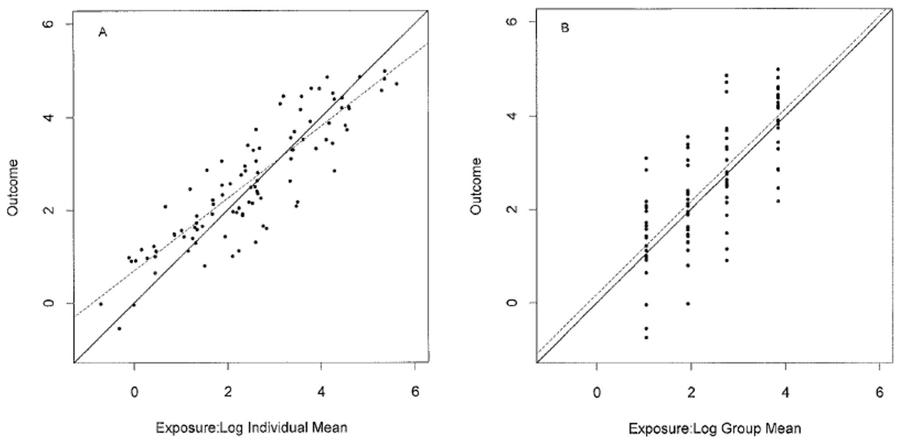
Seixas and Sheppard, 1996
Originally “Homogeneous exposure groups” (HEGs)
Changed to “Similar exposure groups” (SEGs)
Groups frequently defined by common structures
Individuals within groups also have different exposures
Statistical measures of central tendency often applied to groups
Mean, median, mode
We treat every individual in the group as though they are exposed at the this measure of central tendency
For categorical exposures, we assume groups are exposed (1) or unexposed (0)
Specificity
Summarizes variance within group
Small variance = highly specific
Precision
Summarizes variance between groups
Large variance = highly precise
Goal 1: create groups with retain true individual differences (specificity)
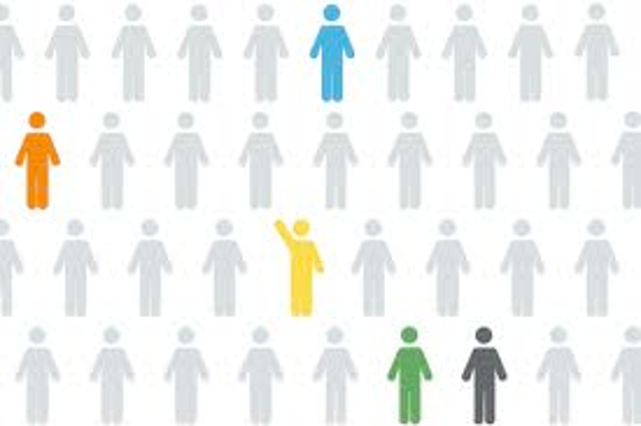
Goal 2: create groups that are as large as possible (precision)
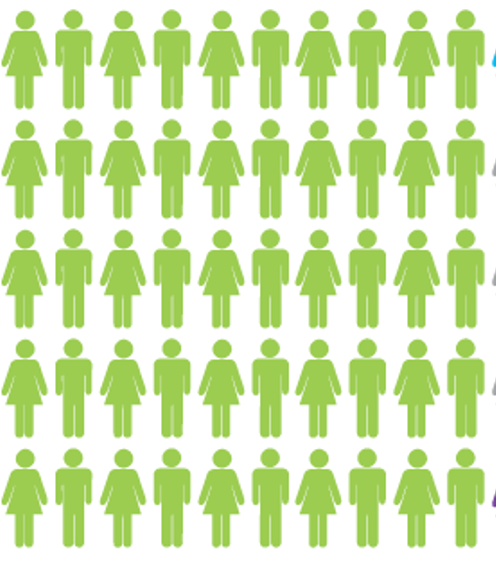
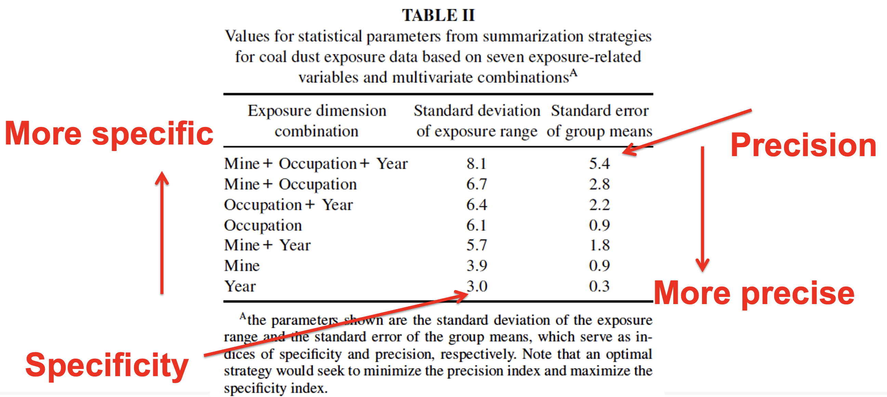
Werner, Attfield, 2000
A priori
A posteriori
Group by
Activity type
Process
Agent
Exposure pathway
Location
Time
Etc.
Note variation in group size, exposure range, repeated measures
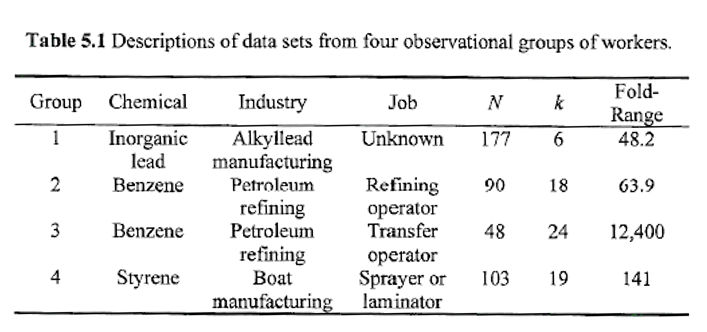
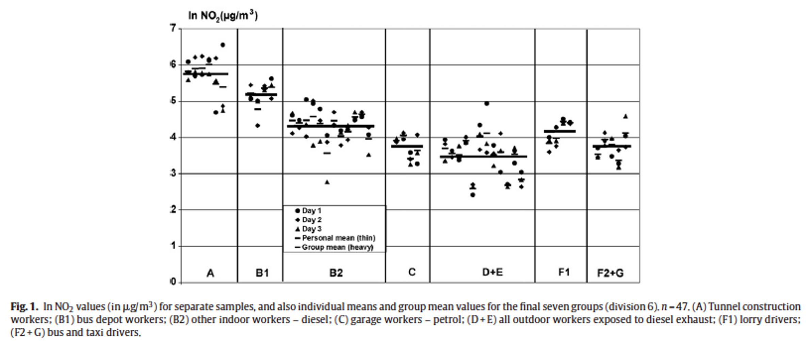
Lewne, Plato, Bellander, Alderling, Gustavsson, 2010
Possibilities
Within group variability > between group variability
Between group variability > within group variability
Question: which of these grouping approaches is preferred?
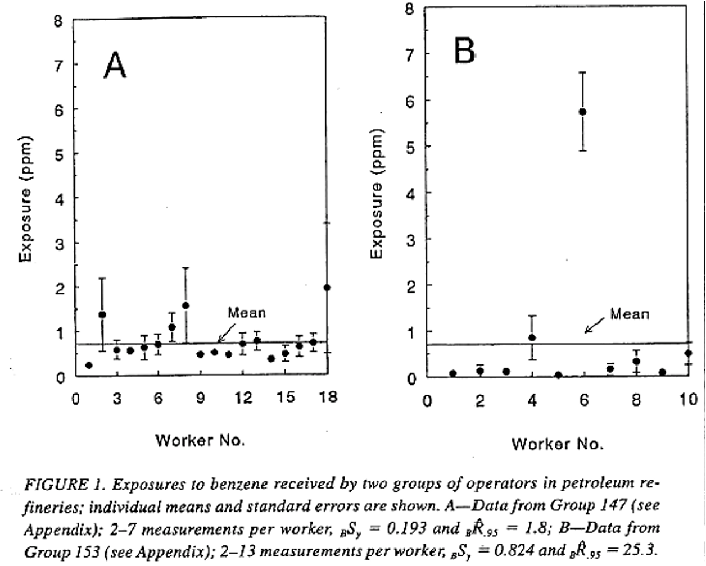
Rappaport, Kromhout, Symanski, 1993
Reducing attenuation bias
What do you think of this as a grouping strategy, and why?
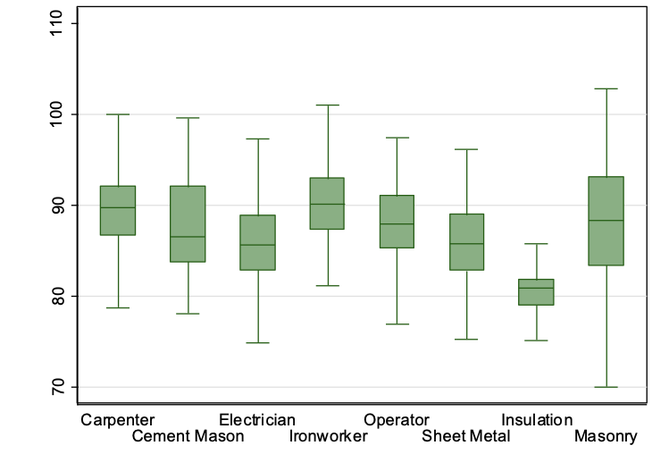